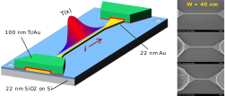
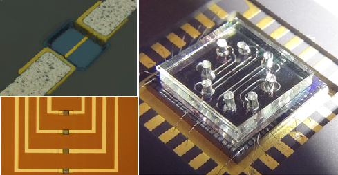
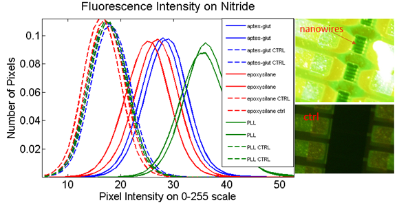

I recently completed my PhD in the department of Applied Physics at Yale, and I previously earned my B.S. in Physics at Indiana University. My PhD work was conducted in Mark Reed's group doing mostly device physics type work. Below you can read about the projects I was involved in during my PhD. In my first and second year I worked on using electric fields to manipulate cells. I also worked on biosensing applications of silicon nanowires. Later I worked on an engineering effort to create a multimodal brain probe for trauma patients. My dissertation stemmed from my work on electromigration and electrothermal properties in gold nanostructures.
Electromigration and Electrothermal Properties in Gold Nanostructures
October 2014
As on-chip technologies continue to scale down across fields from electronics to biomedical devices, the relevance of metallic nanostructures under AC and DC current stress continues to grow. However, electrothermal phenomena and related material properties differ greatly from the micro to the nano scale, due to fundamental differences in the role of surfaces and interfaces, size effects in microstructure, and ultimately, at small enough length scales, quantum effects.

My thesis work sought to improve understanding and modeling of electrothermal properties and the phenomenon of electromigration (EM) in ultra-thin, top-down patterned metal nanostructures.
We developed and applied an experimental technique to estimate values for thermal conductivity of both a metal nanowire and its insulating substrate by measuring the increase in resistance due to small amounts of self-heating. We found that the thermal conductivity of our nanowires increases rapidly with temperature and width, while the Lorenz ratio is is significantly lower than would be predicted within conventional Weidemann-Franz theory.
Armed with measured values of electrothermal material properties, we investigated the behavior of nanowires and nanobowties under conventional DC EM. We conducted several experiments supporting the need for a more nuanced picture of nanoscale EM than that of a fixed critical junction temperature at which EM onset is achieved.
 The final part of the thesis explored the relationship between temperature and electron wind force in EM by looking at power and current density at breakdown under a generalized AC bias (AC with a DC offset). Additionally, we implemented the first algorithm for feedback controlled AC EM (FCACEM) which may prove more suitable for single molecule junction applications.
The final part of the thesis explored the relationship between temperature and electron wind force in EM by looking at power and current density at breakdown under a generalized AC bias (AC with a DC offset). Additionally, we implemented the first algorithm for feedback controlled AC EM (FCACEM) which may prove more suitable for single molecule junction applications.
Charge-based Biosensing with SiNW FETs
June 2013
The goal of this project is the detection of low concentrations of protein in solution using a silicon nanowire field-effect transistor (SiNW FET). Our approach has an advantage over other sensing modalities because it give rapid real-time response, doesn't require labeling of the target molecule, and can be easily incorporated on-chip with other CMOS electronics.  In collaboration with Mary Mu (Yale GS, EE) we fabricated these FETs in our cleanroom at Yale, using CMOS-compatible top-down processes. The final devices have 1um wide active channels in Si with a 20nm thick thermal oxide. The entire chip is coated with SU-8 polymer and window openings are patterned only in the region over the active channel, which allows solution to be placed in direct contact with the chip surface for sensing. The chips are bonded into DIP packages to be interfaced with the electrical sensing setup. We use integrated microfluidics to target the solutions to individual devices for certain applications. Our devices sense the presence of molecules on their top surface due to electrostatic gating of the active channel from the net charge of these molecules in solution. Initially the FETs are gated into the linear regime by a solution gate, so that any additional gating potential from charged molecules can be linearly related to the change in observed current.  We functionalize the top of the nanowire with antibodies specific to the protein of interest to achieve a prolonged response which occurs only in the presence of our target protein. With our electrical sensing setup we are able to observe the source-drain current of the FETs as we expose them to different solutions. In order to verify and optimize the functionalization chemistry, we have performed experiments to monitor the signal intensity from fluorescent antibodies on the surface. We have investigated a variety of chemistries on silicon dioxide, aluminum oxide and nitride dielectrics, all of which have been used as sensing surfaces for our SiNW devices.
Dielectrophoretic Control of Cells
August 2012
This project was designed and spearheaded by Monika Weber (Yale GS, EE) - the goal is to begin with a physiological or environmental fluid sample and perform a sensitive test for low concentrations of bacteria. The basic functionalities are dielectrophoretic separation and concentration of bacteria cells and charge-based sensing of those cells with silicon nanowire FETs. The following overview is excerpted from our entry to the 2013 Invent Now Collegiate Inventors Competition.
"We demonstrate a cost-effective, miniaturized, rapid pathogen screening device for detection of pathogenic bacteria from contaminated water. Highly portable, our device can be used in any field conditions and for point-of-care measurements in highly mobile medical units in developing countries. Our highly sensitive device can detect low amounts of bacteria from large volumes of water. It can potentially detect any chosen type of bacteria by modification of the sensing element. The data acquisition system is reusable and handheld. Under mass manufacturing this device will reduce both the cost of testing and the waiting time by a factor of 50. The disposable sensor device size will reduce to less than 1 cubic inch and cost $1 per test."My work on this project focused on the dielectrophoretic manipulation of E.coli and red blood cells in collaboration with Shari Yosinski (Yale GS, BME) and Claudia Shin (Yale College '16). Initially I worked on simulating DEP forces on cells as a function of frequency and fluid medium properties. The code base for these simulations is provided in my code collection. The dominant physics here is the different mechanisms of induced dipole formation, each with different relaxation time, which occur in the bulk media and at the interfaces.
 These effects are modeled by a complex clausius-mossoti (CM) factor which governs the force and torque on the particles. The CM factor inherits the frequency-dependence of the various complex permittivities of the material.
We used the simulation to guide our experiments in manipulating and concentrating E.coli in various physiological saline solutions. Using fabricated microelectrodes and fluorescence microscopy, we gathered data on E.coli behavior at a range of frequencies and solution conductivities. The cells can be pushed toward either high-field (toward electrodes) or low-field (toward gaps) depending on whether the fluid is more or less polarizable than the cell at a given frequency. This behavior is known as positive (PDEP) and negative (NDEP) dielectrophoresis, respectively, and is dictated by the sign of the CM factor. In the process we observed electroosmotic (EO) behavior dominating at low frequencies and high conductivity. This is an electrokinetic effect due to ion flow in the double layer over the electrodes.
We expanded our experiment to investigate differential manipulation of E.coli and human red blood cells, which is predicted to occur in some small range of frequencies where one type experiences PDEP and the other experiences NDEP. We were able to achieve selective capture of E.coli on electrodes in a solution of mixed cell type. This may be useful for applying this method to blood samples, but needs further investigation. [many thanks to Claudia Shin for wonderful video editing.]
These effects are modeled by a complex clausius-mossoti (CM) factor which governs the force and torque on the particles. The CM factor inherits the frequency-dependence of the various complex permittivities of the material.
We used the simulation to guide our experiments in manipulating and concentrating E.coli in various physiological saline solutions. Using fabricated microelectrodes and fluorescence microscopy, we gathered data on E.coli behavior at a range of frequencies and solution conductivities. The cells can be pushed toward either high-field (toward electrodes) or low-field (toward gaps) depending on whether the fluid is more or less polarizable than the cell at a given frequency. This behavior is known as positive (PDEP) and negative (NDEP) dielectrophoresis, respectively, and is dictated by the sign of the CM factor. In the process we observed electroosmotic (EO) behavior dominating at low frequencies and high conductivity. This is an electrokinetic effect due to ion flow in the double layer over the electrodes.
We expanded our experiment to investigate differential manipulation of E.coli and human red blood cells, which is predicted to occur in some small range of frequencies where one type experiences PDEP and the other experiences NDEP. We were able to achieve selective capture of E.coli on electrodes in a solution of mixed cell type. This may be useful for applying this method to blood samples, but needs further investigation. [many thanks to Claudia Shin for wonderful video editing.]